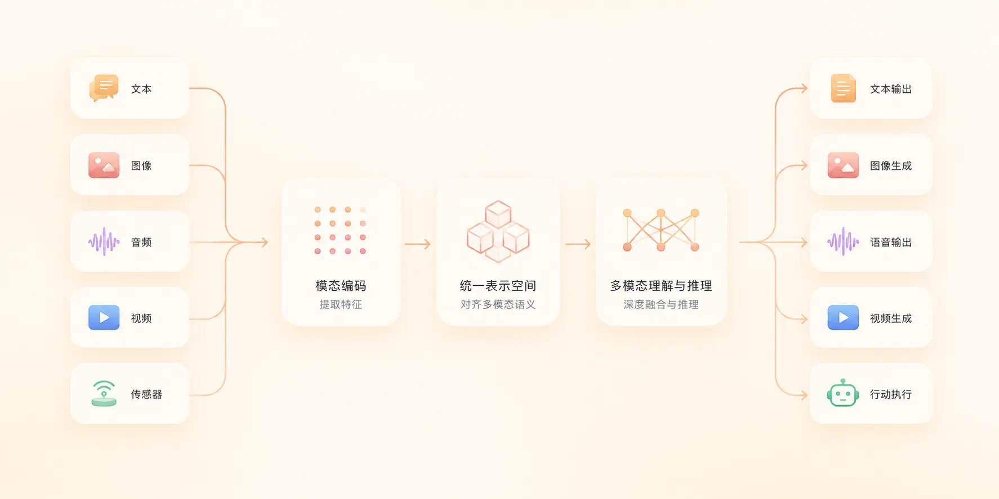

マルチモーダル大規模モデル（Multimodal）
マルチモーダル（Multimodal）大規模モデルは、AIがテキスト、画像、音声、動画などの複数の情報形式を同時に処理できるようにするものであり、現在の大規模モデルにおける中核的な発展方向の一つです。
本記事では、マルチモーダルの概念、発展過程、内部原理と代表的な能力についてゼロから解説し、文末には、5分で最初のマルチモーダルアプリを構築するための実行可能なサンプルを紹介します。
一、マルチモーダルとは？
一般的な大規模モデルは通常、1種類の情報しか処理できません——テキスト。従来のAIに画像を与えて「この画像には何匹の猫がいますか？」と尋ねた場合、マルチモーダルに対応していなければ、そのモデルは答えることができません。
一方、現実世界はテキストだけで構成されているわけではなく、複数の感覚情報によって構成されています：
| 感覚 | 対応する情報 |
|---|---|
| 目 | 画像 |
| 耳 | 音 |
| 口 | 言葉 |
| 手 | 動作 |
| 動画 | 画像＋時間 |
| ウェブページ | テキスト + 画像 + 構造 |
したがって、マルチモーダル（Multimodal）という概念が生まれました。
一言で理解すると：
マルチモーダル = 1つのモデルが複数の情報形式を同時に理解し生成する。
代表的な例を2つ見てみましょう：
1、画像と質問を入力：「この写真の食べ物はカロリーが高いですか？」、モデルの回答：「これはフライドチキンとフライドポテトです。推定約1200キロカロリーです。」
-
2、音声を入力：「この会議を要約してください」、モデルがテキスト要約を出力し、行動提案も付け加えます。
このように画像を見て説明したり、音声を聞いて要約する能力が、マルチモーダルを最も直接的に示しています。
二、モーダル（Modal）とは？
モーダル（Modality）とは情報の表現形式のことです。。
異なるモーダルは異なる入力と出力に対応します。以下の表に、一般的なモーダルとその代表的な用途を示します：
| モーダル | 入力例 | 出力例 | 代表的な用途 |
|---|---|---|---|
| Text（テキスト） | 小説、チャット履歴 | 回答、文章 | Q&A、作文、翻訳 |
| Image（画像） | 写真、スクリーンショット | 画像理解、画像生成 | OCR、視覚的Q&A |
| Audio（音声） | 音声、音楽 | 文字起こし、音声合成 | 会議要約、音声アシスタント |
| Video（動画） | 動画ストリーム | 動画分析、タイムライン | 授業の要約、コンテンツ検索 |
| Sensor（センサー） | GPS、温度 | 制御信号 | ロボット、自動運転 |
| Action（動作） | マウスクリック、キー入力 | 動作の実行 | GUIエージェント、自動化 |
モデルが対応するモーダルが多いほど、その能力は人間に近づきます。これが、すべてのトップ研究機関がテキストモデルをマルチモーダルモデルへアップグレードしている理由でもあります。

三、マルチモーダル大規模モデルの発展過程
文字のみを処理できた時代から、見る・聞く・動画を出力することを可能にするまで、マルチモーダル大規模モデルは明確な3つの段階を経てきました。
第一段階：言語モデル（LLM）
この段階のモデルは入力も出力もテキストです。代表的な製品には、OpenAI GPTシリーズ、Anthropic Claude、Google Geminiがあります。
これらはコードを書き、文章を書き、翻訳し、質問に答えることができ、能力は高いですが、根本的な制限が1つあります：見ることができない。
第二段階：視覚言語モデル（VLM）
VLMはLLMの基盤に「画像を見る」能力を追加したものです。典型的な使い方としては、Webページのスクリーンショットをアップロードし、「なぜレイアウトが崩れているのですか？」と尋ねると、モデルが「CSSの競合です」と答えるというものです。
この段階のモデルは、画像理解、OCR、図表理解などの能力を備え始めました。
第三段階：ネイティブマルチモーダルモデル
ネイティブマルチモーダルモデルは、「画像」と「テキスト」を2つの結合されたモジュールとしては扱いません。訓練の最初から、画像、音声、動画、テキストを統一的に処理します。。
それは、見る、聞く、話す、推論する、実行するという完全な能力を持ちます。これが現在の業界の主流の方向性です。
四、マルチモーダルモデルは内部でどのように動作するのか？
マルチモーダルモデルの内部動作は、一言でまとめると次のようになります：すべてのデータを統一ベクトル空間に変換する。
例：
「一匹の猫」、「cat」、cat.png という3つの表現は、異なるモーダル由来ですが、エンコード後はベクトル空間内の近い領域に配置されます。
全体の流れを次の図に示します：
上の図は入力から出力までの完全なフローを示しています。以下、各ステップを詳しく見ていきます。
第一ステップ：エンコーディング（Encoding）
異なるモダリティは、モデルが処理できるように先に数値に変換する必要があります。
| モダリティ | 元データ | エンコード後 |
|---|---|---|
| テキスト | 「こんにちは」 | [2034, 789] 一連のトークンID |
| 画像 | ピクセル行列 | 視覚特徴ベクトル |
| 音声 | 波形 | スペクトル特徴ベクトル |
第二ステップ：統一意味空間
エンコード後の重要なステップは、「猫」、「cat」、cat.png をベクトル空間内で互いに近づけることです。
これが「クロスモーダル理解」の本質です。異なるモダリティの特徴を同じ空間に投影することです。
第三ステップ：出力生成
統一空間で推論した後、モデルは必要に応じて結果を異なるモダリティに「復元」します。
出力は、テキスト、画像、音声、動画のいずれかになります。
例：画像をアップロード → 説明 → 紹介動画を生成。これが完全なマルチモーダル生成チェーンです。
五、なぜ Transformer はマルチモーダルを統一できるのか？
核心的な理由はただ一つ：Attention メカニズム。
Transformer の核心となる公式は Attention(Q, K, V) で、その意味は「モデルが自分で何に注目すべきかを判断する」ことです。
例を挙げると、ユーザーが「画像の中で誰がバスケットボールをしていますか？」と尋ねたとき、モデルは次のように動作します：
- まず画像を見て、画像内のすべての人物を認識する
- 画像内のバスケットボールを認識する
- 「誰」と「バスケットボール」の関係を判断する
- 文脈を総合して答えを出力する
この「自主的に注目点を決定する」能力により、Transformer はマルチモーダル入力の処理に自然に適しています：
| 入力 | モデルが注目している箇所 |
|---|---|
| テキストのみ | 文間の意味的関連 |
| 画像 + テキスト | 画像領域とテキスト記述の対応 |
| 動画 + テキスト | タイムラインのセグメントと質問の関連 |
これが、Attention がほぼすべての現代の大規模モデルの「標準装備」となった理由でもあります。もともとクロスモーダルのために設計されているからです。
六、マルチモーダルの代表的な能力
マルチモーダルモデルには5つの代表的な能力があり、下の図はそれらの関係を示しています。
1. 画像理解
スクリーンショットを入力すると、モデルがページの問題、UI 分析、OCR 結果を出力します。
プログラマーが最もよく使うシナリオは、エラーのスクリーンショットを撮って AI に問題を特定させることです。
2. 画像生成
「未来都市を生成」のようなテキスト説明を入力すると、モデルが AI 画像を返します。
代表的な応用：ポスター、表紙、ゲーム素材、製品スケッチ。
3. 音声対話
話すことがそのまま入力となり、モデルがリアルタイムで回答します。ASR（音声からテキストへ）、TTS（テキストから音声へ）、対話をカバーします。
4. 動画理解
教学ビデオをアップロードすると、モデルが要約、タイムライン、QA 可能な重要シーンを出力します。
5. Agent（エージェント）
「PPT を作って」と入力すると、モデルは完全なアクションチェーンを実行します：資料を検索 → アウトラインを生成 → スライドを作成 → 修正 → エクスポート。
Agent は、「見る、聞く、話す」と「実際に実行する」を組み合わせた最終形態です。
七、初心者が必ず理解すべき5つの用語
マルチモーダル関連のドキュメントを読むとき、下の表の用語が繰り返し登場します。まず覚えておきましょう：
| 用語 | 意味 | 例 |
|---|---|---|
| Token（トークン） | モデルが処理する最小単位。テキストを単語単位で分割 | 「こんにちは世界」→ [こんにちは][世界] |
| Embedding（埋め込み） | 情報を数値座標に変換するプロセス | 「猫」→ [0.12, 0.78, 0.33, ...] |
| Context（コンテキスト） | 現在の対話の履歴と背景情報 | ユーザーが「リンゴ」と言う + 「コンテキスト：スマホ」= iPhone、果物ではない |
| Attention（注意機構） | モデルが入力のどの部分に注目するかを決定する | 画像を見るとき、モデルはまず「人」を見て、次に「バスケットボール」を見る |
| Inference（推論） | モデルが入力に基づいて出力を生成するプロセス | ユーザーが質問を入力すると、モデルが「考えて回答する」 |
この5つの用語はすべての大規模モデルのドキュメントに登場します。まず直感を身につけ、詳細が必要になったら再度確認しましょう。
八、体験してみよう：5分で最初のマルチモーダルアプリを構築
このセクションの目標：画像をアップロードすると、AI がテキスト説明を出力する。
このプロセスには深層学習の知識は一切不要で、Python が使えれば十分です。
8.1 プロジェクトの準備
まずプロジェクト multimodal-demo を作成し、openai ライブラリを使用してテストします：
サンプル
mkdir multimodal-demo
# プロジェクトディレクトリに入る
cd multimodal-demo
# OpenAI 公式 SDK をインストール（複数のマルチモーダルモデルに対応）
pip install openai
にmultimodal-demoディレクトリに画像を1枚アップロードしますcat-cartoon.webp、画像は以下の通りです（右クリックで保存してテストできます）：
8.2 呼び出しコードの作成
この例では、方舟（Ark）の Coding Plan を採用しています彼らの doubao-seed-2.0-pro モデルはマルチモーダルに対応しています。
以下のコードを test.py：
サンプル
import os
from io import BytesIO
from openai import OpenAI
from PIL import Image
# ==================== 方舟（Ark）設定 ====================
ARK_API_KEY = "ark-xxxx" # ここにあなたの Key を入力
ARK_BASE_URL = "https://ark.cn-beijing.volces.com/api/coding/v3" # 汎用 v3 インターフェースの使用を推奨
MODEL_ENDPOINT = "doubao-seed-2.0-pro" # マルチモーダル対応モデル
# クライアントを初期化
client = OpenAI(
api_key=ARK_API_KEY,
base_url=ARK_BASE_URL,
timeout=60
)
def prepare_image_base64(image_path: str, max_size: int = 1024) -> str:
"""
ローカル画像を読み込み、透明チャンネルを処理し、スケーリングして base64 文字列に変換します
"""
if not os.path.exists(image_path):
raise FileNotFoundError(f"テスト画像が見つかりません: {image_path}")
with Image.open(image_path) as img:
# 1. RGBA 透明背景の処理
if img.mode == "RGBA":
background = Image.new("RGB", img.size, (255, 255, 255))
background.paste(img, mask=img.split()[-1])
img = background
elif img.mode != "RGB":
img = img.convert("RGB")
# 2. 等比スケーリング（大きな画像で Payload/Token が溢れるのを防ぐ）
img.thumbnail((max_size, max_size))
# 3. Base64 に変換
buf = BytesIO()
img.save(buf, format="JPEG", quality=85) # 画質を適切に圧縮
b64 = base64.b64encode(buf.getvalue()).decode("utf-8")
return f"data:image/jpeg;base64,{b64}"
def multimodal_chat(img_path: str, prompt: str):
"""マルチモーダル対話テスト"""
try:
print(f"画像を処理中: {img_path} ...")
img_b64 = prepare_image_base64(img_path)
print("火山エンジン方舟（Volcano Engine Ark）プラットフォームにリクエストを送信中...")
res = client.chat.completions.create(
model=MODEL_ENDPOINT,
messages=[
{
"role": "user",
"content": [
{"type": "text", "text": prompt},
{"type": "image_url", "image_url": {"url": img_b64}}
]
}
],
temperature=0.7,
max_tokens=1024
)
print("\n" + "="*10 + " 認識結果 " + "="*10)
print(res.choices[0].message.content)
print("="*30)
return res
except FileNotFoundError as e:
print(f"【エラー】{e}")
except Exception as e:
print(f"【API リクエスト失敗】ネットワークまたは Endpoint/Key が正しいか確認してください。エラー情報:\n{e}")
return None
if __name__ == "__main__":
# テスト設定
image_file = "./cat-cartoon.webp"
question = "この画像の内容を詳しく説明し、画面の主体、色彩、シーンを分析してください"
# 一時テスト画像を模擬作成（ローカルに対応する画像がない場合、素早く目視デバッグするため）
if not os.path.exists(image_file):
print(f"{image_file} が検出されなかったため、一時テスト画像を生成中...")
Image.new('RGB', (200, 200), color = (73, 109, 137)).save(image_file)
multimodal_chat(image_file, question)
Pyhton を実行すると、出力結果は以下の通りです：
在发送请求至火山引擎方舟平台... ========== 识别结果 ========== 这是一张**Q版萌系卡通风格的数字角色插画**，整体背景为纯净的纯白色，没有任何环境元素，所有视觉重心都集中在中心的小猫主体上，是典型的独立角色立绘/吉祥物设计。 --- ### 一、画面主体详细描述 主体是一只端正坐姿的卡通幼橘猫，是经过萌化设计的家养橘白虎斑猫形象，整体气质乖巧天真、亲人友好： 1. **比例与姿态**：采用萌系设计特有的大头短身比例，头部占整体高度的60%左右， ...
ブラウザのコンソールを開くと、モデルが画像に対して行ったテキスト説明を確認できます。全体の流れは次のとおりです。
ユーザーが画像をアップロード → ブラウザが画像URLをOpenAI SDKに渡す → マルチモーダルモデルが画像を理解 → テキスト説明を返す → コンソールに出力。
8.3 よくある拡張
上記の最小限の実行可能コードを完成させたら、さらに拡張できます：
| やりたいこと | 変更方法 |
|---|---|
| ローカルファイルのアップロードに変更 | ユーザーが画像をアップロードした後、読み取ってbase64に変換し、次に～に代入します。image_file |
| 連続マルチターン会話に対応 | 履歴のQ&Aを～に追加するmessages配列 |
| 他社のモデルに変更 | OpenAIクライアントを構築する際に指定するbaseURL、例：Qwen、OpenAI、Anthropic互換エンドポイント |
| 音声を処理する | をtype: "image_url"～に変更するtype: "input_audio"、base64オーディオを提供する |
九、学習ロードマップ（推奨）
大モデルに触れたばかりの場合、下図は実証済みの6週間の学習パスです。
十、未来はどうなるのか？
ソフトウェアの形態の変遷を振り返ると、明確なトレンドが見えます：
過去：ソフトウェア ＝ 機能
現在：ソフトウェア ＝ モデル
未来：ソフトウェア ＝ マルチモーダルエージェント
これは、将来ユーザーが「ウェブサイトを作って」などと一言言うだけで、モデルが設計、コーディング、デプロイ、運用の全プロセスを自動的に完了することを意味します。
マルチモーダルは「モデルに画像を見る機能を追加する」ほど単純ではありません。
それが本当に変えるのは：
コンピューターが現実世界を直接理解し始めることです。
特に、強化学習はエージェントが環境との継続のな相互作用を通じて、試行錯誤とフィードバックによって最適な行動戦略を学習できる技術です。これはまさに「データ駆動型知性」という概念の完璧な解釈であり、現代のAI分野で最も活発な研究分野の一つです。
よくある質問
マルチモーダルモデルと通常のLLM、どちらがより使いやすいですか？
シナリオによります：プレーンテキストの作成、コード生成、翻訳では通常のLLMのコストパフォーマンスが高いです。画像を見る、音声を聞く、動画を理解する必要がある場合は、マルチモーダルモデルが唯一の選択肢です。
ローカルでマルチモーダルモデルを実行できますか？
できますが、コストが高めです。小規模パラメータのVLM（例：Qwen2-VL-7B）は16GB VRAMのコンシューマー向けGPUで動作します。より大きなモデルは通常、クラウドGPUまたはAPI呼び出しが必要です。
マルチモーダルモデルの出力は必ずテキストですか？
必ずしもそうとは限りません。ネイティブのマルチモーダルモデルはテキスト、画像、音声、さらには動画を出力できます。純粋なVLMは通常テキストのみを出力します。
マルチモーダルAPIの選び方は？
画像理解のみを行う場合：OpenAI gpt-4o、Gemini 2.5 Flash、Qwen2-VLはすべてコストパフォーマンスの高い選択肢です。「見る＋聞く＋リアルタイム音声」が必要な場合は、OpenAI Realtime APIまたはGemini Liveを直接使用することをお勧めします。
その他の拡張